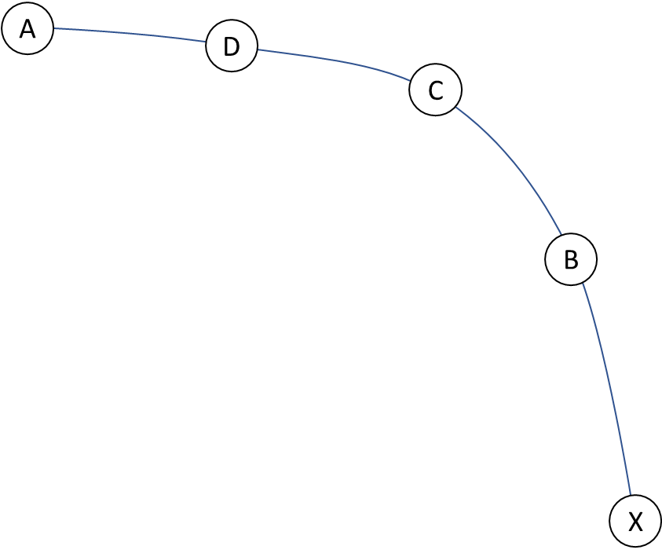

# Overview
也没什么干货能靠说就让你理解，还是做题
# 最短距离算法
学动态规划时聊到了几种最短距离算法，这里做个总结
首先，图中存在负环的话，没有解的，因为你可以一直在里面绕圈圈，不断降低成本到负无穷
DAG：有向无环图
SSSP：单源最短路径，即从特定的起始节点（源节点）出发，计算图中所有其它节点到该源节点的最短路径
APSP：全节点对的最短路径，APSP 问题的目标是计算图中任意两个节点之间的最短路径长度，并找到这些路径的具体路径
# Dijkstra 算法（贪心）
目标：SSSP
限制：不能有负权重的边，不然你无法保证我们已经确定最短路径的节点是最短的
时间复杂度：看你的数据结构：
-
朴素的矩阵实现，每次要遍历 n 个点寻找当前距源点最近的顶点，执行 n-1 次遍历（一次遍历确认一个点，一确认 n-1 个点），
-
堆（优先队列）优化，堆查找和堆更新的时间复杂度为，考虑具体操作：
- 查找当前距源点最近的顶点 u，即堆查找，
- 更新其临边链接的顶点，每次更新，最坏更新 E 个边，
- 以上操作重复 次，就是
等等……？我们可以仔细思考一下第二步所谓的 “最坏”，实际上迪杰斯特拉只会对每条边走一次！！！u-v 这条边，只有步骤一选择了 u，且 v 没被步骤一选择过，才会进行一次松弛，所以不存在所谓最坏，反而可以考虑：
-
查找当前距源点最近的顶点 u，即堆查找，重复 次，
-
更新其临边链接的顶点，每次更新，所有遍历一共更新 E 个边，
-
加和，
# Bellman-Ford 算法
目标：SSSP
限制：可以有负权重的边；可以检测出有无负环（超过 V-1 次遍历，依然可以松弛）
理解：每一轮，我们遍历一遍图上的所有边，然后进行最小距离更新（松弛）；
k 轮贝尔曼算法，我们遍历了从源点 最多走了 k 条边的所有路径，类似一种特别的 BFS
时间复杂度：
# Floyd 算法
目标：APSP
限制：可以有负权重的边
时间复杂度：
# 疑问
-
对于 Floyd 算法，你怎么保证遍历路径的中间节点时，不会因为顺序出现遗漏情况？比如从 A 到 X 的最优路径为 ADCBX，那你从 B 开始依次遍历中间点，不会出现路径遗漏吗？
答：中间点的遍历时要求写在最外层的！那你看中间点从 B 开始遍历时，CBX 肯定通了对吧；然后 C 做中间点，是 D-X 通了；以此类推，最后 A-X 的路径还是通的，能算出来
-
Floyd 算法是 [出发点，中间点，终点] 三层遍历，那能不能设想用两层 Floyd 遍历，计算出发点 A 到任何其他点的距离？
答：那相对于你对 [中间点，终点] 进行遍历。遍历到中间点 ZH 时，你都是在算 (A, ZH) + (ZH, 其他点)，比如上图你遍历到中间点 B，没用啊！AB 不是通的，同时此刻你也不能像 Floyd 算法一样把路径中间的 CBX 记录下来打通，因为你算的，记录的始终是 (A，某点），但是在计算逻辑中用到了未知的 (某点，某点)，不一致，所以不行啊！而原 Floyd 算法目标求 (某点，某点)，计算逻辑也是 (某点，某点)，是一致的。
除非一种情况，A-X 的最短路径上的字母顺序，和遍历路径中间结点时的顺序一致，此时你的两层 Floyd 遍历结果是正确的。 上图在计算 AX 时，你会用到 (D,X)，但是两层遍历没有记录 (D,X) 的结果；但是下图中，A-X=[A,B,D,X]；此时你遍历中间节点 ZH 时，(A, ZH) 你有， (ZH, 其他点) 退化为 ZH 和相邻节点的距离，你也有。
那怎么保证我选的中间节点顺序一定和最终最短路径顺序一样呢？ADCBX，从左往右，离出发点 A 的距离不断增加，有么有觉得和迪杰斯特拉很像……？